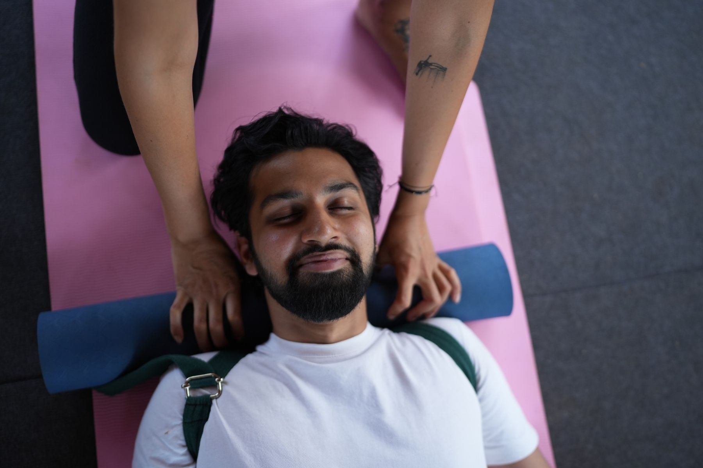
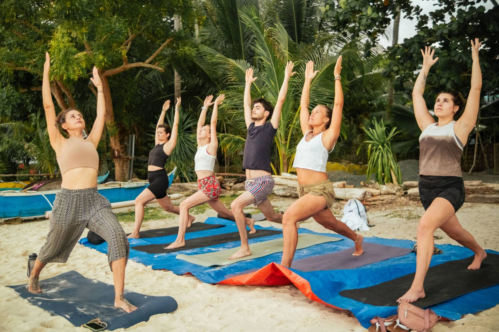
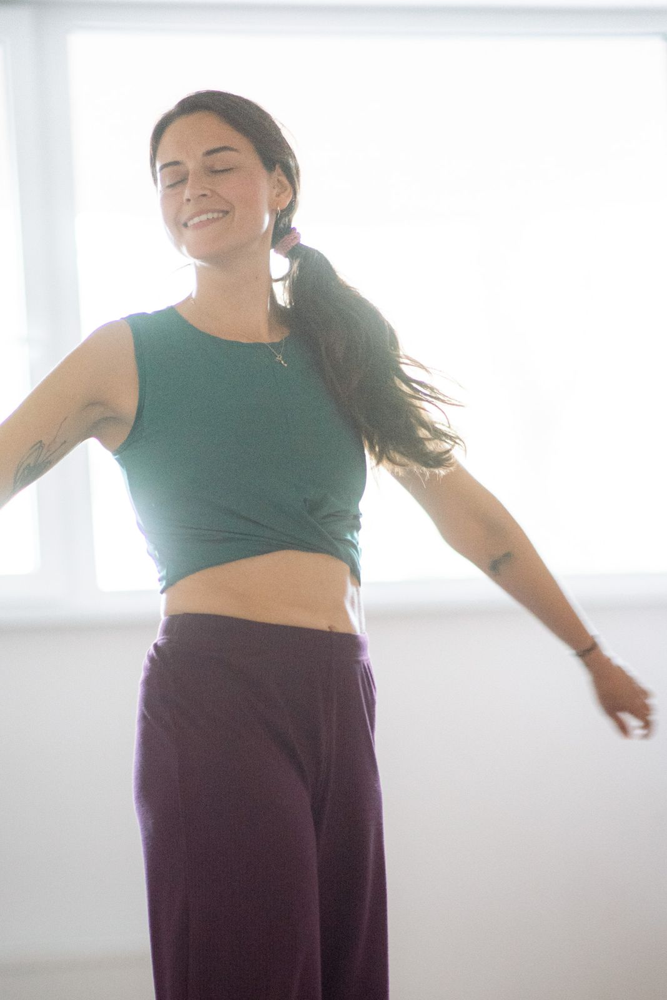

Domů / Dech
Dech je první pohyb.
Pránájáma, dechové techniky a workshop Flow State Reset. Kombinuji klasickou práci s dechem z jógy s technikami z freedivingu.

Pránájáma a dechové techniky
Klid, který si můžeš kdykoli přivolat
Dechové techniky jsou praktické nástroje: jak prodloužit výdech, zklidnit nervový systém, soustředit se nebo prodloužit zádrž. Naučíš se je rychle a použiješ je hned, třeba před spaním, před důležitým jednáním nebo před ponorem. Propojuji je s poznatky z freedivingu.
Pránájáma jde hlouběji. Je to jedna z cest jógy, komplexní praxe, která pracuje s dechem, energií a pozorností zároveň. Nejde jen o techniku, ale o to, jak dech mění tvůj vnitřní stav. Potřebuje pravidelnost a čas, a o to víc ti dá.
Pránájáma ve studiu Sangha
Jednou měsíčně v neděli ráno, 9:00–10:00.
- Neděle 29. 11. 2026 · 9:00–10:00 · Sangha Přerov300 Kč
- Neděle 20. 12. 2026 · 9:00–10:00 · Sangha Přerov300 Kč

Workshop
Flow State Reset
Tříhodinový workshop. Praktický vhled do propojení pohybu a dechu jako nástrojů vědomé seberegulace. Bez výkonu a bez tlaku na dokonalost.
Pohyb a flow
Jógovo-pohybová lekce inspirovaná elementem vody. Skrze spinální vlny, spirální linie a rotace postupně odkrýváme, kde v těle neseš chronické napětí, a právě tyhle pohybové vzorce cíleně uvolňujeme.
Dech a nervový systém
Začínáme BOLT testem (Body Oxygen Level Test), jednoduchým měřením tolerance CO₂. Pak prodloužený výdech, přirozené přechody do zádrží a technika udžají. Workshop uzavírá integrace a mindfulness.
Odneseš si konkrétní nástroje pro vědomou práci s vlastním stavem, přenositelné do každodenního života.
Co říkají ti, kdo to zažili
We had an online pranayama session and I can honestly say it was incredible! Even though Lenka is currently in India, the virtual class felt so personal and engaging, like being in a real in-person session. Using our headphones, I could fully immerse myself in her guidance, breathing exercises, and the sense of presence she creates. As a freediver, I found her pranayama techniques especially helpful for improving my breathing technique and breathholds, which are key for diving deeper and staying calm underwater. Lenka is such a talented and engaging teacher, and I highly recommend her classes to anyone looking to learn about yoga. Thank you, Lenka, for this amazing experience. Can’t wait for the next session!Chceš se nadechnout jinak?
Napiš mi, co potřebuješ. Domluvíme pránájámu, workshop nebo individuální práci s dechem.